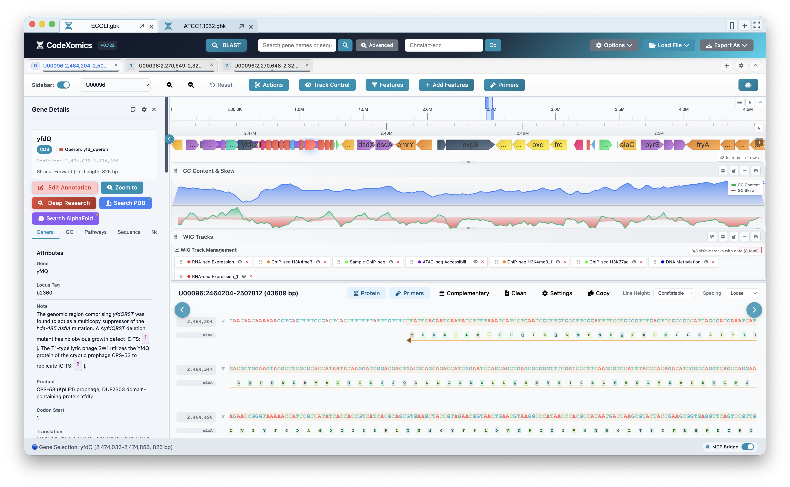
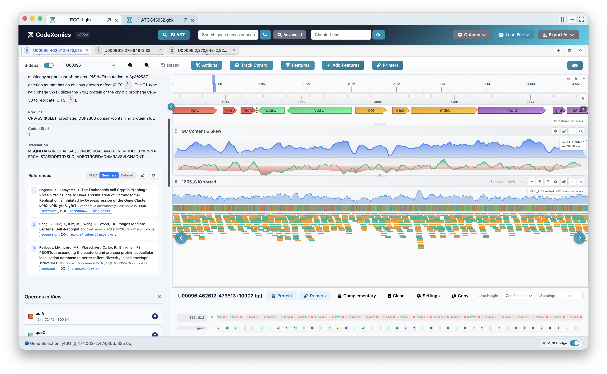
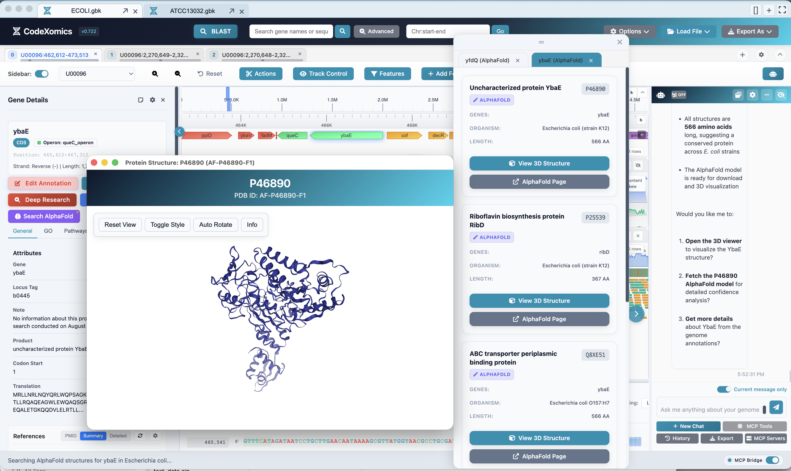
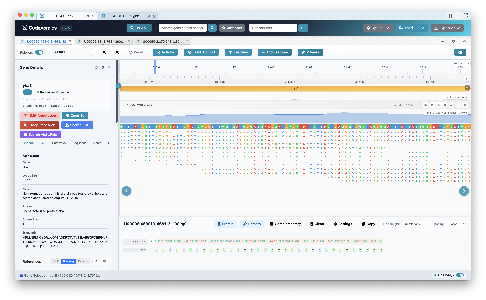
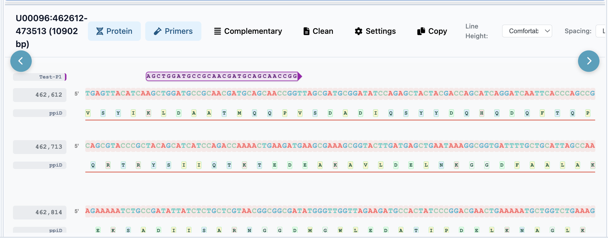

A genome browser with executable AI analysis
CodeXomics combines interactive genome visualization with conversational agents that execute real tools against your loaded data, from BLAST and primer design to protein structure lookup.
A full genomics workbench,
driven by conversation
One desktop workspace combining a genome browser, a multi-agent AI assistant, a dynamic tool registry, and a plugin marketplace.
Interactive Genome Visualization
High-performance SVG and Canvas rendering of genes, sequences, reads, variants, GC tracks, and custom annotations — zoom from chromosome to base pair.
AI ChatBox
Multi-provider LLM configuration with dynamic tool injection. The assistant doesn't just answer — it executes tools against your live genome session.
Multi-Agent Runtime
Seven specialized agents coordinate analysis, data, navigation, external APIs, plugins, and deep research — routed automatically per task.
Dynamic Tool Registry
A structured registry retrieves relevant tools for each query, keeping prompts focused while the assistant works against the active genome session.
MCP Server
Model Context Protocol server with tools mode and agent mode over HTTP/SSE (port 3002) and WebSocket (port 3003) — drive CodeXomics from any MCP client.
Plugin Marketplace
VS Code-inspired extension architecture with activation events, contribution and command registries, marketplace support, and security validation.
From file to finding
Start with the question you have. CodeXomics keeps the data, view, and analysis connected as you work.
Seven agents, one coordinator
Each request is routed to the agent built for it — from quick navigation to autonomous deep research.
CoordinatorAgentOrchestrates multi-step workflows and routes tasks to the right specialist.
AnalysisAgentSequence analysis, BLAST, primer design, GC content, and statistics.
DataAgentFile loading, track management, and data transformation.
NavigationAgentGenome navigation, zoom, search, and view state control.
ExternalAgentPubMed, preprints, AlphaFold, and external database lookups.
PluginAgentPlugin discovery, installation, and marketplace operations.
DeepResearchAgentCitation-verified deep gene research with archived, auditable proposals.
See it working
Real views from the app — every one of them reachable by asking the assistant.





Speaks your file formats
Up and running in minutes
- Download the latest build from GitHub Releases, or build from source with Node.js 20/22.
- Configure an AI provider in
Options → Configure LLMs— OpenAI, Anthropic, Google, or a local model. - Load a genome via
File → Load Fileor open a.prj.GAIproject. - Ask the assistant to navigate, visualize, and analyze — it executes real tools against your session.
- Extend it with plugins from the marketplace, or drive it from any MCP client.